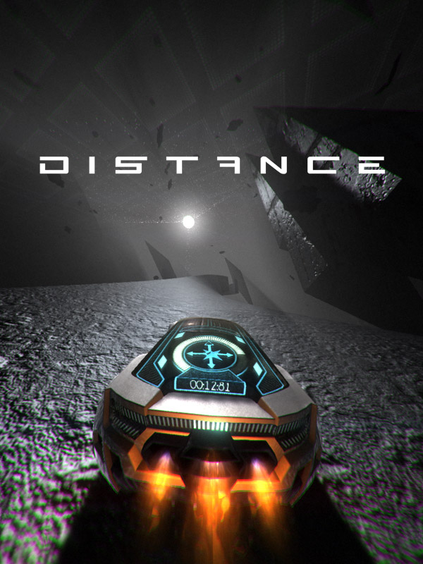

Distance
Distance
Details
|  | |
| Spielzeit | 11h 25m 0s |
| Letzte Aktivität | 13.01.2021 23:00:46 |
| Hinzugefügt | 12.02.2020 |
| Modifiziert | 10.11.2022 12:25:08 |
| Fertigstellungsstatus | Abgeschlossen |
| Bibliothek | Steam |
| Quelle | Steam |
| Plattform | PC (Windows) |
| Veröffentlichungsdatum | 18.09.2018 |
| Community Bewertungen | 86 |
| Kritiker Punkte | 74 |
| Benutzerwertung | |
| Genre | Action Indie Racing |
| Entwickler | Refract |
| Verleger | Refract |
| Eigenschaft | Achievements Level Editor Multiplayer Ranglisten Remote Play Single Player Steam Karten VR Support Workshop 🦢 Cross Platform |
| Links | Communityhub Diskussionen Neuigkeiten Shopseite PCGamingWiki Errungenschaften Workshop |
| Tag | Achievements Captions Available Cross-Platform Multiplayer Level Editor Online Pvp Shared/Split Screen Steam Workshop VR Support |
Beschreibung
Distance is an atmospheric racing platformer. Fusing futuristic arcade racing with parkour, survive a deadly, mysterious, neon-drenched city by jumping, rotating, and flying.
The roads are treacherous with obstacles around every corner. Instead of doing laps on a loop, survive to the end in the quickest time. Your car has abilities that not only allow you to drive on the track, but upside down and on buildings and walls! You can also fly to discover new shortcuts and paths. Take on the roads alone, or in multiplayer with your friends!
The game is a spiritual successor to the multi-award winning Nitronic Rush, created by ourselves and 5 others at DigiPen Institute of Technology. It was widely praised for its innovative mechanics, visual style, audio design, and atmosphere.
The roads are treacherous with obstacles around every corner. Instead of doing laps on a loop, survive to the end in the quickest time. Your car has abilities that not only allow you to drive on the track, but upside down and on buildings and walls! You can also fly to discover new shortcuts and paths. Take on the roads alone, or in multiplayer with your friends!
The game is a spiritual successor to the multi-award winning Nitronic Rush, created by ourselves and 5 others at DigiPen Institute of Technology. It was widely praised for its innovative mechanics, visual style, audio design, and atmosphere.
Key Features
- Adventure: A short single player experience. Drive into the heart of a dark, mysterious city as you pursue an ominous threat.
- Arcade: Race ghosts to take on the leaderboards' best. Earn medals to unlock new tracks in several different modes.
- Multiplayer: Online (up to 12 players) and split-screen (2-4 players) play in modes such as Sprint, Reverse Tag, Stunt, etc.
- Trackmogrify: Random track generation with advanced seed modifiers.
- VR: Full VR integration with support for Oculus Rift CV1 and HTC Vive.
- Level editor: Use a powerful level editor to create levels from within the game and share them with players around the world. Over 2,500 levels have already been shared on Steam Workshop!
- Original soundtrack: New music from the composer behind award-winning games like Nitronic Rush, Solace, and The Fourth Wall. Listen to a preview here.